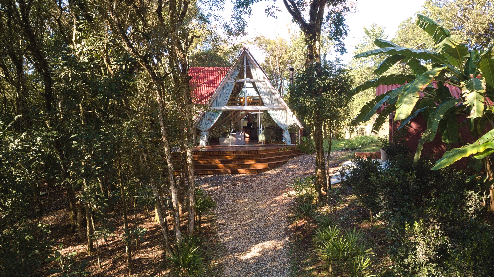
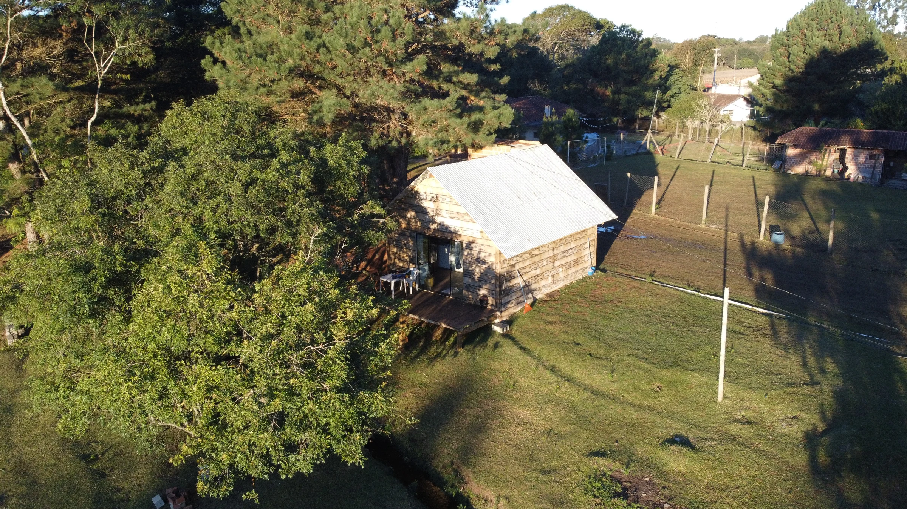

Vacation rental

Portfolio
Real properties.
Images that last.
Films, vertical formats and photography created to present spaces in a professional and memorable way.
Video portfolio
Movement, context
and atmosphere.
Players only load when you choose to watch, so the page stays fast.
Rural property
Rancho D'Lara
A cinematic tour of the property and its highlights.Vacation rental
Chalé Familiar
Coziness, layout and landscape in a visual story.Vertical content
Parque Passaúna
Native format for Shorts, Reels and mobile.Projects in context
It's not just the image.
It's what it needs to say.
Three projects, three needs and one direction: reveal the space with clarity, atmosphere and intent.

01 · Vacation rentalChalé A-Frame
Turning architecture into the wish to stay.
- Goal
- Show the arrival, the connection with the forest and the personality of the building.
- Direction
- Wider shots to give context and closer ones to highlight its triangular shape.
- Delivery
- High-resolution photos for website, booking platforms and social media.
 02 · Rural property
02 · Rural propertyRancho D'Lara
Showing the scale without losing the experience.
- Goal
- Place the house, pool, lakes and green areas in one complete view of the property.
- Direction
- Panoramic moves and layout views combined with close shots of the highlights.
- Delivery
- Horizontal 4K cinematic film and a selection of aerial images.

03 · Vacation rentalChalés do Campo
Organizing the place into a visual story.
- Goal
- Present units, paths, landscape and atmosphere as one coherent whole.
- Direction
- Alternating wide views and individual framing to explain the space naturally.
- Delivery
- A photo collection optimized for digital marketing and sales presentations.
Photo portfolio
From the whole
to the detail.


Your space could be next